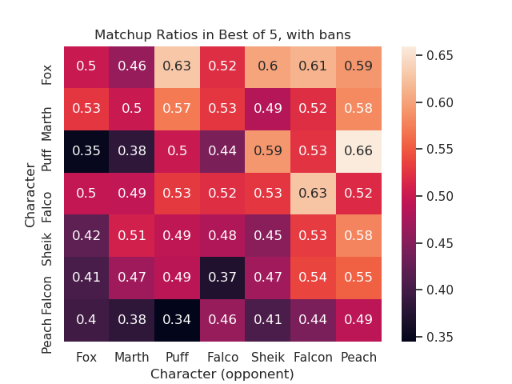

SSBM Stagelist
Table of Contents
How Does The Stagelist Affect Matchups in SSBM?
Abstract
We explore the matchups of Super Smash Brothers Melee based on survey responses about matchups stratified by stages. We recieved n=x responses to a survey asking participants to give matchup ratios on each stage vs the high tier characters. We use this to explore the idea of adding a banned stage in Best of 5, as well as how closely the list approximates the new SSBM Tier List.
Introduction
A combination of the lack of in-person tournaments and the rise of Project Slippi as the predomant way to play accessible, low-stakes matches have led to an unprecidented rise in netplay tournaments, many of which are free to enter. With all these new, easy-to-run, low-overhead tournaments, a more-frequent-than-usual discourse on alternative rulesets has started popping up. Because tournaments don't require paying for a venue to hold and to attend, running a tournament which runs an alternative, experimental ruleset has never been easier. Some of these ideas, like Frozen Stadium, have been met with near-ubiquitous praise. Others have not been met with as much excitement.
One idea which has primarily been floated by spacie players is the idea of adding a ban in best of five sets, as they currently exist for best of three sets. The argument goes that most characters have a stage that makes the matchup lopsided, and that a ban in a longer set would make most matchups less dependent on counterpick stages.
Whether or not this subjective argument carries any weight, as far as the history of ruleset changes go, is not terribly important to it's adoption. Melee players will inevitably adopt a ruleset which can be feasibly run at tournaments which the most people consider to be fun. Still, though, it would be nice to explore how much the ban in best of five changes the meta, if at all.
Should We Add a Ban in Best of Five?
Why is this a discussion in the first place?
For a long time, the SSBM ruleset has allowed players to "ban" a stage in best-of-3 sets after winning a game. There are a few good reasons for this, but the big reason is that keeping your opponent to their second best available stage prevents characters with very lopsided counterpick stages to abuse them as harshly. This, coupled with the fact that players cannot return to stages they've won on ("Dave's Stupid Rule", or DSR), lets all of the stages see regular tournament play.
Deeper in bracket, strong players typically hate the volatility that comes with short, best-of-three sets. To combat this, most tournaments eventually shift to a longer best-of-five format in which there is no ability to ban stages. If you see this for the first time, you might be a little confused by this. Why are there different rules for different set lengths?
Actually, bans used to be a part of both best-of-three and best-of-five sets, back when stages like Rainbow Cruise, Mute City, and Brinstar were legal. Nowadays, there are only six legal stages. With six legal stages, if you allow players to ban stages in best-of-five sets with six legal stages, something funny happens.
For example, imagine there are two characters, A and B. Among the six legal stages, two stages are A favored, two stages are B favored, and two are about even. Imagine the following events happen.
- A wins the neutral stage, and bans one of the two B favored stages
- B wins the other B favored stage, and bans one of the two A favored stages
- A wins the other A favored stage, and bans the same B favored stage he did last time
- B wins the other neutral stage, and bans the same A favored stage as last time
- A counterpicks B to the stage he just lost on, and loses
Wait a minute, that's a little weird! In game 5 player A has to counterpick themselves to a stage they just lost on? This gets even worse when you imagine player B has three favored stages; player A is rewarded for winning on the neutral stage by having to counterpick himself in game 5.
All of the solutions which preserve the ban and keep the current stagelist are similarly a little weird in these scenarios: you could get rid of DSR, but then only three stages get played at most. You could remove the ban only for game 5, but that arbitrarily places more value on game 1 than game 4, even if they are both played on neutral stages.
With this in mind, we have all collectively decided that the least weird solution is to just allow the lopsided counterpicks to happen, as a worthy tradeoff for having more games and having counterpicks still always feel like counterpicks.
It's important to keep in mind that there's no inherent reason that having a ban or not having a ban should be the "correct" decision. Like most rule questions in the melee community, it's just an arbitrary decision that most people never really think about. Sometimes Character B's third best stage is still A favored. If you have three strong stages, and your opponent only has two, who is to say your opponent "deserves" a ruleset which presents them with an even matchup? The esport of Melee is like a statue waiting to be chiseled out of a block of marble – something which is our responsibility to decide which parts we want to keep and which parts we want to smash away.
A long time has passed since the decision to adopt this stage list and this ruleset. With more highly optimized punish, the lopsided counterpicks are starting to feel more lopsided than ever before, and complaining about the stages is at what feels like an all-time high. Recently, the idea of reinstituting a ban in best-of-fives has resurfaced, and people are starting to argue about whether the counterpicks are worse than forcing a player with counterpick advantage to go to a stage they lost on in game 5.
I can't help that there's some fundamental disagreement about what these decisions actually do to the balance of the tier list; something which can actually be examined if we had estimates for matchup ratios of all the stages. Perhaps sometime soon the team behind PGStats could do this sort of analysis upon thousands of tournament sets, or PracticalTAS could survey top players for more "correct" matchup ratios per stage. For now, this surtvey will have to do.
What Does This Do to the Matchups?
Bo3 vs Bo5
Something which is rarely discussed is that each matchup is different in Best of 5 and Best of 3. Being able to ban a strong counterpick stage vastly changes probability of victory, and in a very real sense the game has a slightly different tier list in best-of-three and best-of-five.
Adding a Ban in Bo5

The Tier List
In lieu of a global ranking in 2020, Panda Global elected to revive the tier list, which had not been updated in five or six years. The resulting list was relatively inoffensive, as far as the high tier characters go, and the list met minimal criticism from players who use a character above yoshi on the list.
However, like most things in our lovely community, there was substantial criticism about the list about the process the list was made. Most notably, it was done by asking top players to create a list of every character, rather than asking each player to submit a list of their main character's matchups and then inferring a list from there. The reason for this is pretty straightforward; the list needs to have weak characters on it, and nobody who plays those characters plays those weak characters in tournaments (with some exceptions).
Still, though, most players are a lot more competent at assessing the attributes of their own character, rather than making a judgment about how good mid tiers are against other mid tiers. It would be fun to see how a list generated this way compares to a list made via the global aggregate method.
Generating a Matchup Chart
For once, I will forego my usual codeblock procedure and actually write something simple which I will be posting on github, which I haven't used since well before I knew how to actually operate a computer.
If we take matchup ratios as "percentage chance to win" (which is, actually, kind of ill-defined, but more on that later), then we should be able to make a matchup chart based on the probabilistic outcome of sets. The code for this already exists, and you can play with it yourself thanks to work done by mazzystarfox. If we assume best of 5 (again, more on that later), our chart spits out the following.
From Matchup Chart to Tier List
There are two ways to approach generating a tier list: assuming equal character distribution and assuming a specific character distribution
Even Distribution (Character vs Cast)
Special Distribution (Character vs Meta)
Keep in mind that the distribution here might be different; being good vs jigglypuff might have been more valuable for the tier list during hungrybox's reign at number one, compared to now where he is considered less important to beat to win majors. In both of these scenarios, the actual distribution of characters hasn't really changed.